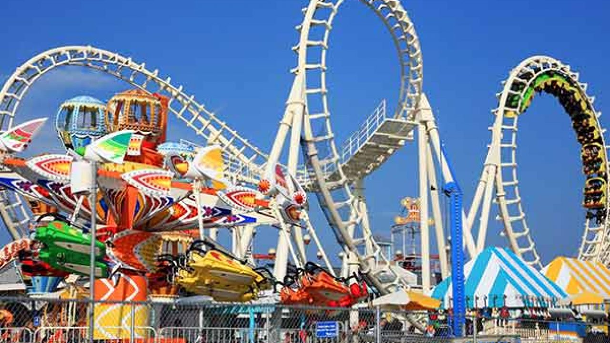

Asia > India > Tamil Nadu > Chennai District > Chennai(Madras)
ABOUT CHENNAI
The people of Tamil Nadu consider providing food to others a service to humanity.
Thus the service in the state capital, Chennai, is first-rate. Treat your senses
to some of the richest South Indian flavours in traditional dishes like sambar, rasam,
fish curry or kootu. And don't forget to have a cup of full-bodied Tamil coffee,
enhanced with chicory — no visit is complete without it.
ESSENTIALS CHENNAI

~ DO ~
places to see , ways to wander and
signature experience
~ STAY ~
a mixture of the charming , modern and
tried and true
~ EAT ~
can't miss spots to dine , drink
and feast